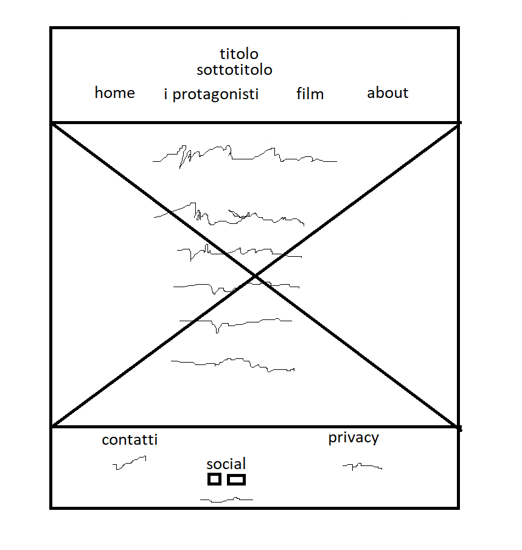
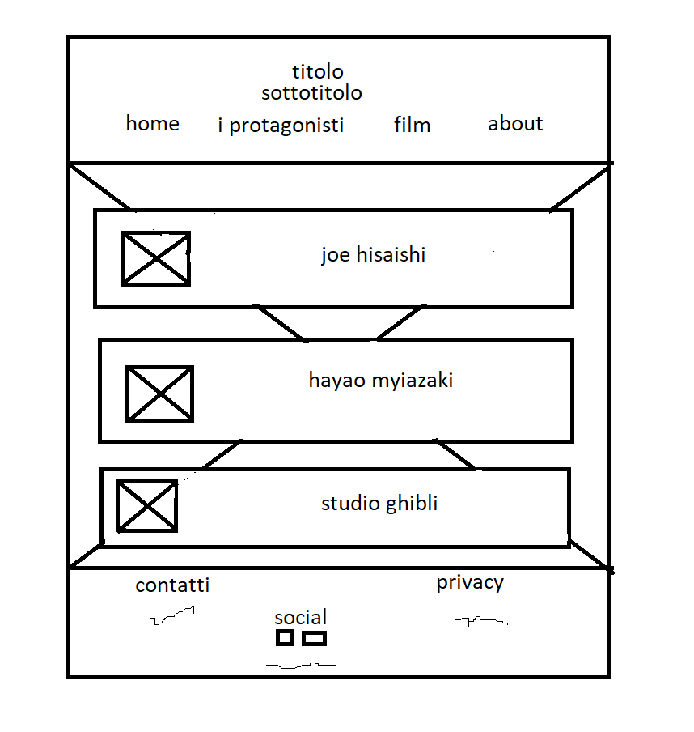
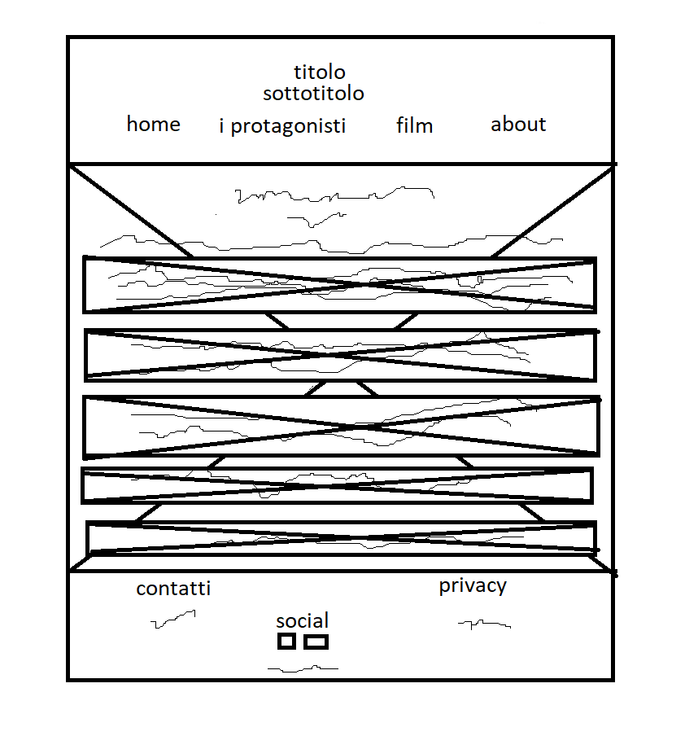
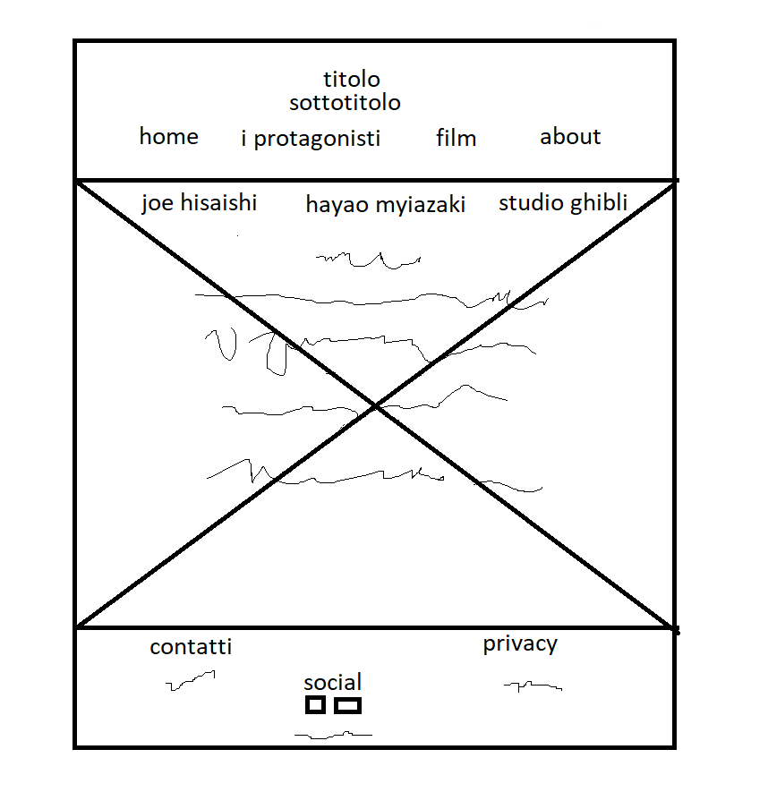

Ho creato questo sito per far conoscere, a chi non li conoscesse già, i film di Hayao Myiazaki ed il compositore dietro le musiche di queste pellicole. Il mio target è chiunque sia appassionato di arte, motivo per cui ho creato un sito facilmente navigabile e quindi adatto a tutte le età. Ho fornito informazioni sui diversi autori e sui diversi film, descrivendone le musiche cercando di stimolare curiosità nei lettori.
L'obiettivo pincipale di questo sito è di mettere in risalto e dare il giusto credito alle colonne sonore di Joe Hisaishi, dando particolare attenzione ai film di Hayao Myiazaki.
Il target utente è molto largo, senza particolari limitazioni di età, e comprende per lo più chiunque sia interessato a diverse forme di arte come il disegno, il cinema, l'animazione e la musica.
I competitors presi in considerazione sono articoli scritti su alcuni siti, in particolare, quelli con cui mi sono confrontato sono degli articoli presenti sui siti "staynerd.com", "deerwaves.com", "losbuffo.com". Questi articoli prendono però di mira un target più specifico, con più conoscenze sia di cinema che di musica.
Wireframe per "home" e "about"
Wirerfame per "i protagonisti"
Wireframe per "film"
Wireframe per "Joe Hisaishi","Hayao Myiazaki" e "Studio Ghibli".
Ho cercato di riproporre, per quanto possibile, le atmosfere dei film di Myiazaki e delle musiche di Hisaishi all'interno del mio sito. Ho utilizzato un colore simile al baige per dare un tono di tranquillità, interrotto dall'immagine di background più scura, in modo simile a come l'armonia si interrompe nei film di Myiazaki e nelle musiche di Hisaishi. Nella sezione film ho cercato immagini in grado di rievocare le diverse pellicole, essendo quasi impossibile trovare immagini dei lungometraggi con licenza Creative Commons. Ho scelto un menù di navigazione molto intuitivo in modo da aumentare il target, utilizzando come font il Times New Roman.
HTML e CSS
Ho usato Sublime Text 2 come text editor, Font Awesome per delle icone, Bing e Google per cercare immagini con licenza Creative Commons, W3schools per il color picker, Paint per disegnare i wireframe e l'architettura del sito, Github per la pubblicazione e Google Analytics per verificare le visualizzazioni.
I competitors che ho visto non spiegavano come Joe Hisaishi riuscisse a trasmettere le differenti emozioni, oppure utilizzavano un gergo molto tecnico, rendendo difficile, in entrambi i casi, comprendere i meriti del maestro Hisaishi e quindi non riuscendo a pieno ad invogliare i lettori ad informarsi di più o ascoltare i diversi brani. Io ho cercato di spiegare le sue scelte e i motivi per cui sono state compiute, dando un contesto più ampio che comprendesse non solo Hisaishi, ma anche Hayao Myiazaki e lo studio Ghibli.
L'obiettivo del sito è di fare pubblicità ai film di Myiazaki e alle musiche di Joe Hisaishi.
Il mio target sono gli appassionati di arte, in particolare di animazione, i quali sono più facilmente raggiungibili sui social come instagram o facebook. Ritengo che la mia sincera ammirazione nei confronti dei film dello studio ghibli sia molto esplicita e che questa possa convincere i lettori ad informarsi di più.
Promuoverò il mio sito tramite Instagram e Whatsapp.